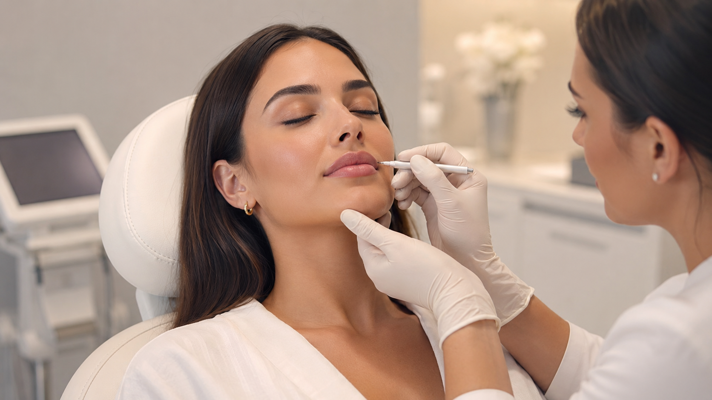

Proportii
Poate fi potrivita pentru pacienti care urmaresc o armonizare subtila a trasaturilor.
Injectari premium
O abordare integrata pentru armonizare faciala, stabilita gradual si individual, in urma consultatiei.
Medicina estetica
Full face cu acid hialuronic inseamna o analiza a proportiilor fetei si a zonelor care pot beneficia de sustinere, volum sau contur discret.
Planul se stabileste dupa evaluare, cu o abordare prudenta, etapizata atunci cand este cazul, astfel incat obiectivul sa ramana armonia faciala si expresia naturala.
Cadru vizual

Potrivire
Indicatia finala se stabileste in urma consultatiei. Punctele de mai jos sunt orientative si nu inlocuiesc evaluarea medicului.
Poate fi potrivita pentru pacienti care urmaresc o armonizare subtila a trasaturilor.
Poate sustine zonele unde volumul s-a diminuat sau unde se doreste o corectie fina.
Planul poate fi construit treptat, in functie de obiectiv, anatomie si recomandarea medicului.
Experienta
Discutie despre obiective, istoric medical, indicatii si limite.
Analiza personalizata a anatomiei, proportiilor si contextului pacientului.
Recomandari clare, pasi explicati si asteptari formulate prudent.
Tratamentul se desfasoara conform planului, cu recomandari ulterioare de ingrijire.
Obiective
Fiecare obiectiv este discutat realist, in functie de anatomie, indicatie, tehnica si evolutia individuala.
Are ca obiectiv echilibrarea subtila a trasaturilor si pastrarea expresiei naturale.
Poate contribui la definirea unor zone, fara promisiuni standardizate.
Urmareste sustinerea zonelor potrivite, in functie de recomandarea medicala.
Detalii importante
Datele despre durata, recuperare, indicatii sau contraindicatii trebuie validate in consultatie, in functie de zona tratata si contextul medical.
Full face cu acid hialuronic se discuta in functie de anatomie, obiectiv, istoric medical si recomandarea medicului.
De completat cu informatii medicale validate despre durata, pregatire, recuperare si recomandari post-procedura.
De completat cu informatii medicale validate despre riscuri, limite, indicatii si contraindicatii relevante.
FAQ
Decizia se ia in urma unei consultatii, dupa evaluarea anatomiei, istoricului medical si obiectivelor tale.
Abordarea urmareste armonia trasaturilor si proportiile individuale. Rezultatele pot varia in functie de anatomie, indicatie si evolutia personala.
In unele cazuri, planul poate fi etapizat. Ritmul si zonele tratate se stabilesc individual, in functie de evaluare.
Se discuta obiectivul estetic, zonele posibile, limitele procedurii, riscurile, recuperarea si pasii urmatori.
Ritmul controalelor se stabileste in functie de procedura si evolutia individuala. Echipa medicala ofera recomandari personalizate dupa tratament.
Consultatie
Discuta cu echipa ZEN Clinics despre optiunile potrivite, limitele procedurii si pasii recomandati pentru cazul tau.
Programeaza o consultatie